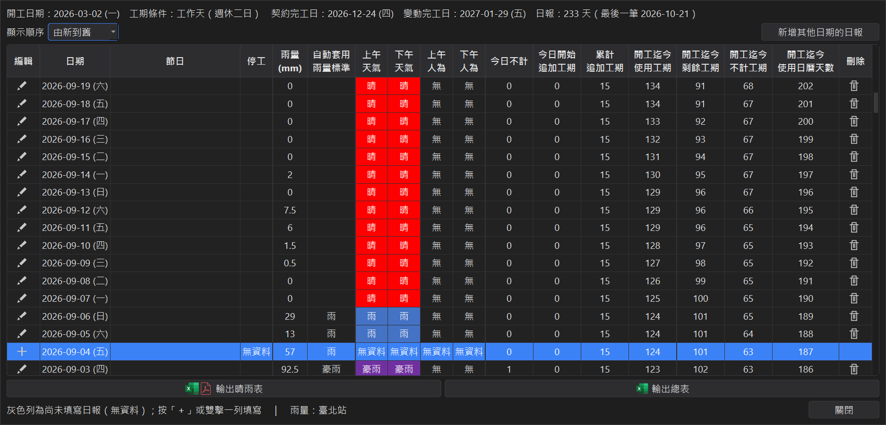
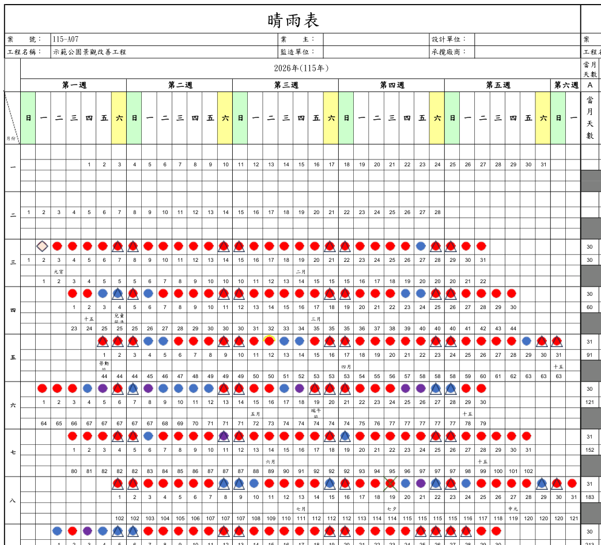
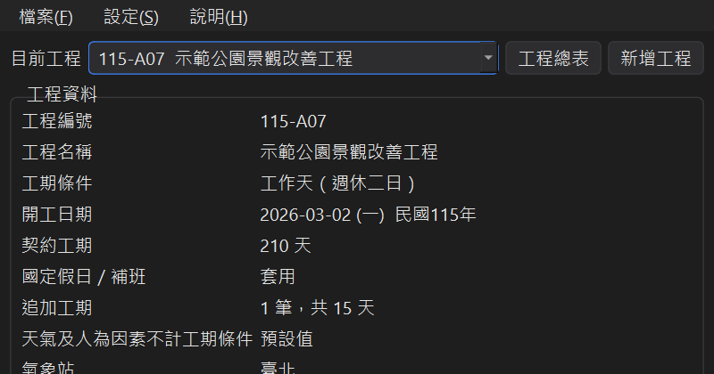
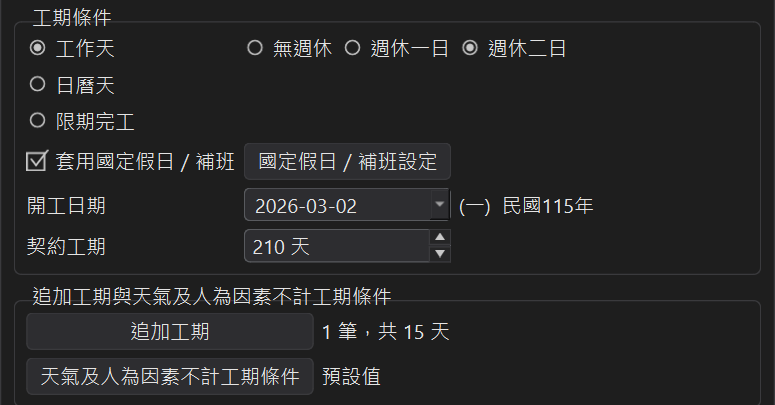
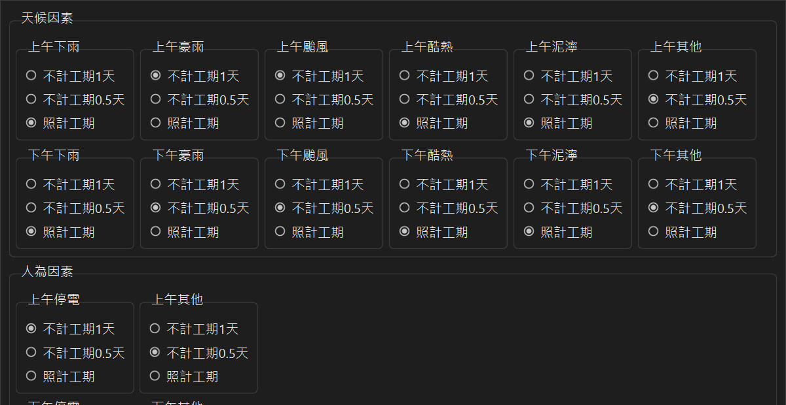
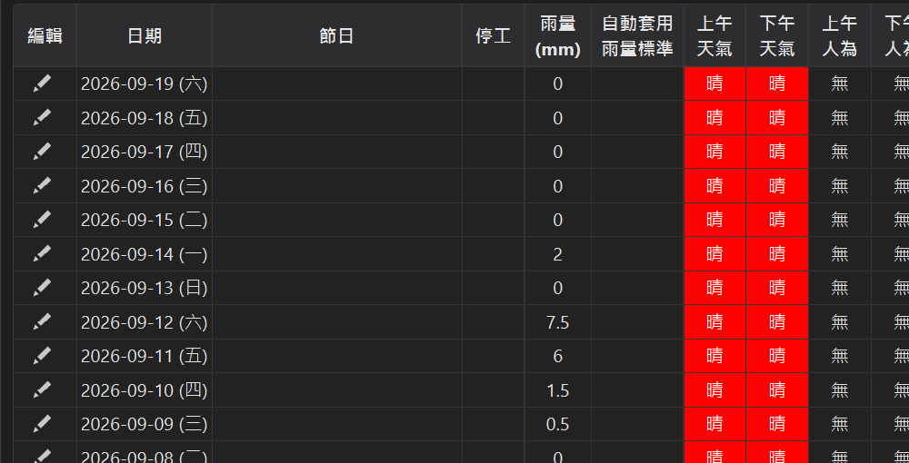
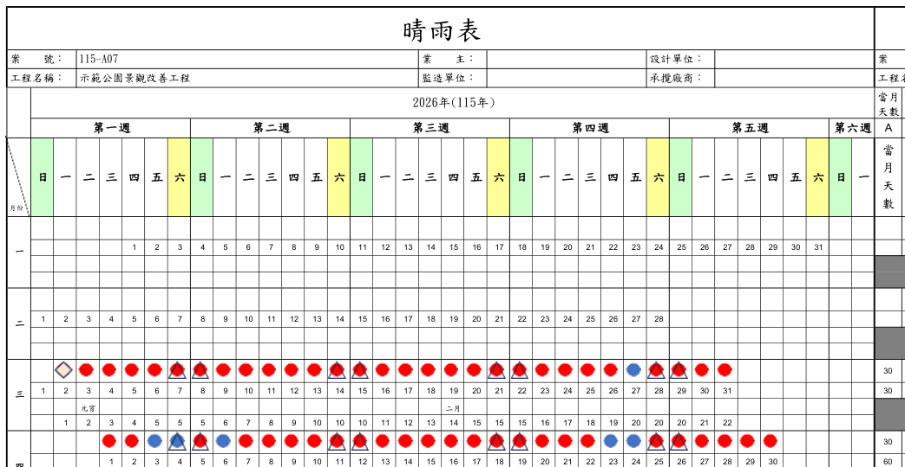

從開工到完工，工期都幫你算
工期計算最花時間的，是一天一天扣假日、扣雨天、加追加工期，再把結果畫成晴雨表 ── 這些都交給程式。
契約工期 ── 輸入一次，完工日自動算出
三種工期條件
工作天（無週休、週休一日、週休二日）、日曆天、限期完工。限期完工只要輸入契約完工日，契約工期自動推算。
國定假日自動帶入
新增工程就帶入國定假日與補班日，也可以自己增減。放假日不計工期、補班日照算，不用每年翻行事曆。
追加工期
記錄每次追加的起始日、天數、理由與核定日期，「含追加工期完工日」立即更新。
日報表 ── 每天填一下，變動完工日跟著走
天氣與人為因素不計工期
上下午分開填天氣（雨、豪雨、颱風、酷熱、泥濘…）與人為因素（停電…），依你設定的條件扣 1 天、0.5 天或照計，即時重算變動完工日。
氣象站雨量自動帶入
選好工地附近的氣象站，日報表列出每天雨量；新增日報時依雨量標準預先帶入「雨」或「豪雨」，不用再一天天查。
輸出與資料管理
預計完工表
整個工期一年一張月曆，標出每天累計的工期天數，週末可用三角形或顏色標記。
晴雨表＋工期計算表
依日報表畫出每天上下午的天氣圖示，右邊附上每月的工期計算表，可直接附在報告書裡。
多工程管理
所有工程集中在工程總表，可搜尋、切換；每個工程的假日、追加工期、不計工期條件各自獨立。
單機或雲端
單機模式資料只存在這台電腦；雲端模式用 Google 帳號登入，換電腦登入同一個帳號就能繼續使用。
同樣一件事，差距就是這麼大
工期表難的不是公式，而是每一次開工日、假日、雨天、追加工期一改，整張表都要重新數過。
 用工期計算工具
用工期計算工具
每個月都在做的工期整理，交給工期計算工具一次處理。
實際畫面
以下畫面都是用示範工程實際操作的截圖。
每天填五個欄位，累計工期全部算好
停工、上午天氣、下午天氣、上午人為、下午人為 ── 填完立即看到今日不計、累計追加工期、開工迄今使用工期、剩餘工期與變動完工日。還沒填的日子以灰底「無資料」標出，不會漏掉。
- 列出開工日到今天的每一天
- 氣象站雨量與建議天氣並列
- 改動任何一天都即時重算

一鍵輸出，直接附進報告
依日報表畫出每天上下午的天氣圖示、假日與週末標記，並附上每月的工期計算表。有安裝 Excel 時可以直接存成 PDF。
- 兩種版面：日期另列一行／日期印在圖示上
- 週末用三角形或顏色標記
- 圖示顏色可自訂

工作天、日曆天、限期完工都能算
選好工期條件、開工日與契約工期，畫面下方立即顯示契約完工日與含追加工期完工日。限期完工則是輸入契約完工日，契約工期自動推算。
- 工作天可選無週休、週休一日、週休二日
- 切到日曆天時天氣自動設為照計工期
- 按「確認」才存檔，按「取消」全部不變

學習工期計算工具

開始使用
選擇單機或雲端模式、認識主視窗，建立第一個工程。

工期條件與國定假日
工作天、日曆天、限期完工的差別，以及國定假日／補班的設定方式。

追加工期與不計工期條件
記錄追加工期；設定雨天、颱風、停電等因素要扣 1 天、0.5 天還是照計。

日報表與變動完工日
每天填天氣與人為因素，雨量自動帶入，變動完工日即時重算。

輸出預計完工表與晴雨表
輸出預計完工表、晴雨表＋工期計算表、日報總表，並自訂圖示顏色。

匯入匯出與雲端模式
備份工程、搬到另一台電腦，或把單機的工程搬上雲端。
下載工期計算工具
完整繁體中文，下載安裝後即可建立第一個工程。
ScheduleCalculator_v1.0.0
- 支援 Windows 10 / 11（64-bit）
- Windows 安裝版可自動更新；免安裝版解壓即用
- 輸出 PDF 需要電腦有安裝 Microsoft Excel；沒有 Excel 時可輸出 Excel 檔
- 下載 Windows 安裝版（可自動更新） 推薦 v1.0.0
- 下載 Windows 免安裝版 v1.0.0
釋出於 GitHub Release ── 透明公開，可確認檔案真實性
有任何問題或建議都歡迎告訴我
使用上的疑問、計算結果與契約規定不同、想要新增的功能，都歡迎來信。